- 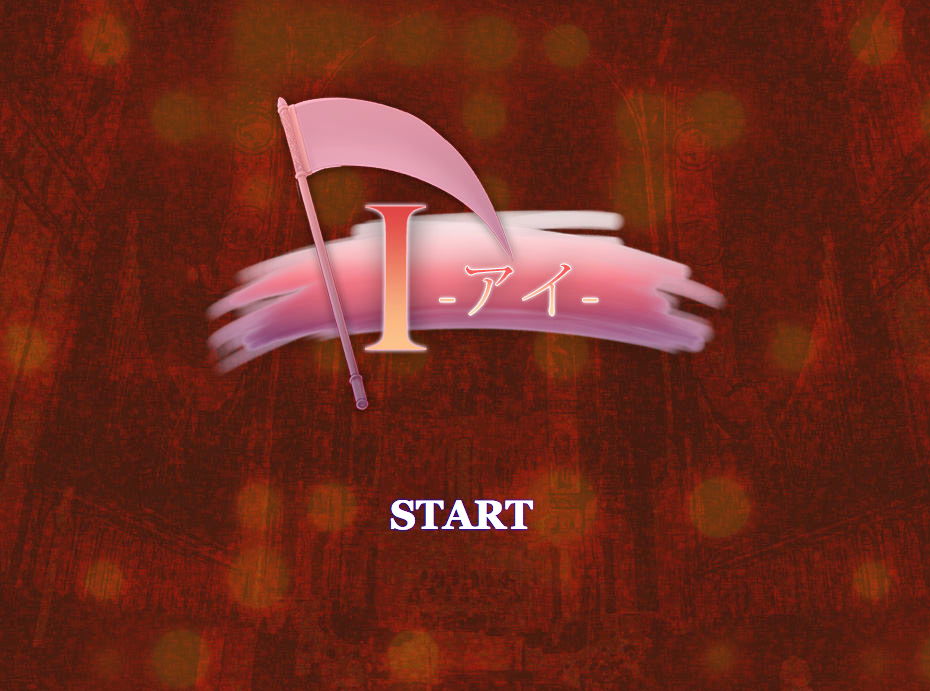専門一学年の時に、学院祭にて学科合同で制作したノベルゲームです。私はキャラデザインを担当しました。
- 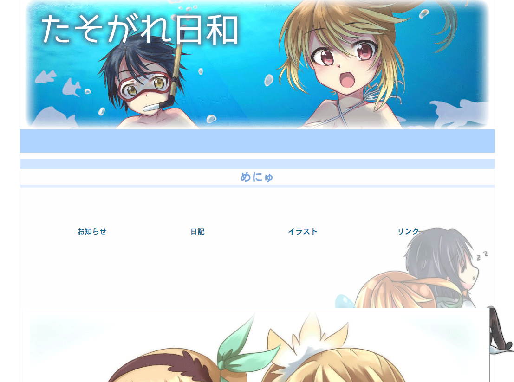個人ブログサイトです。主にイラスト紹介サイトとして作りました。
- 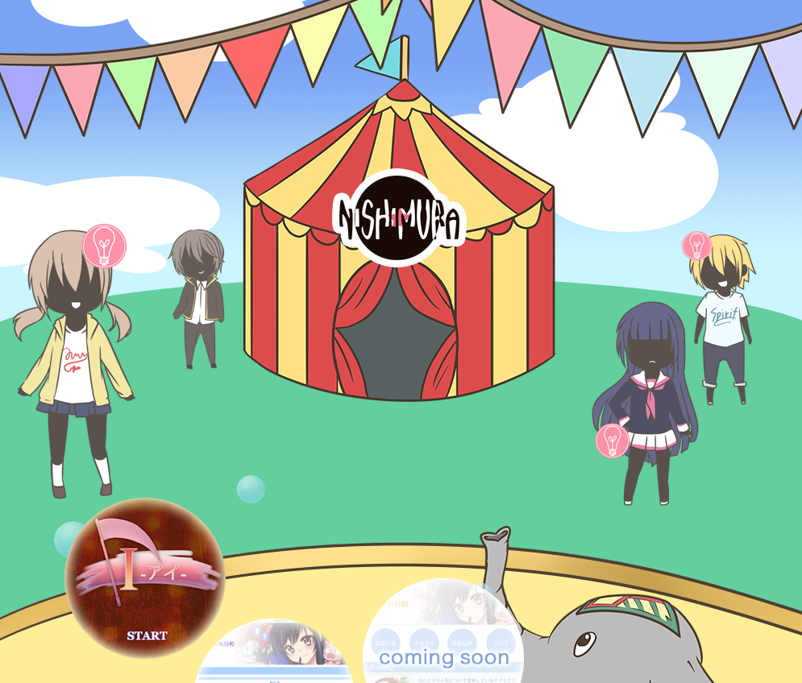パララックスサイト仕様のポートフォリオサイトです。ストーリー性があり、サーカスをイメージして作成しました。主に動きを重視した仕様です。
- 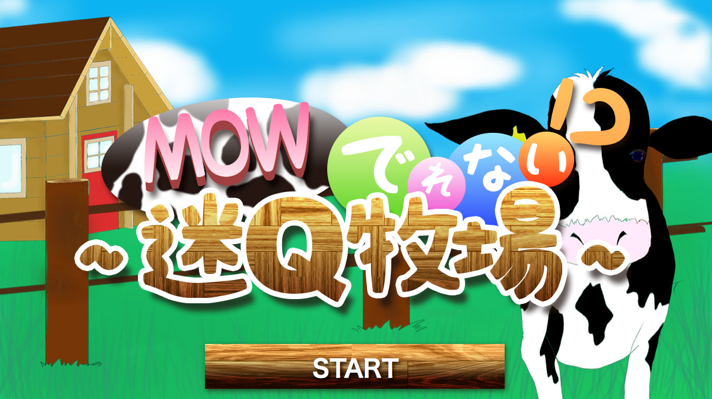専門二学年の時に、学院祭にて学科合同で制作したクイズゲームです。私はキャラデザインを担当しました。
- 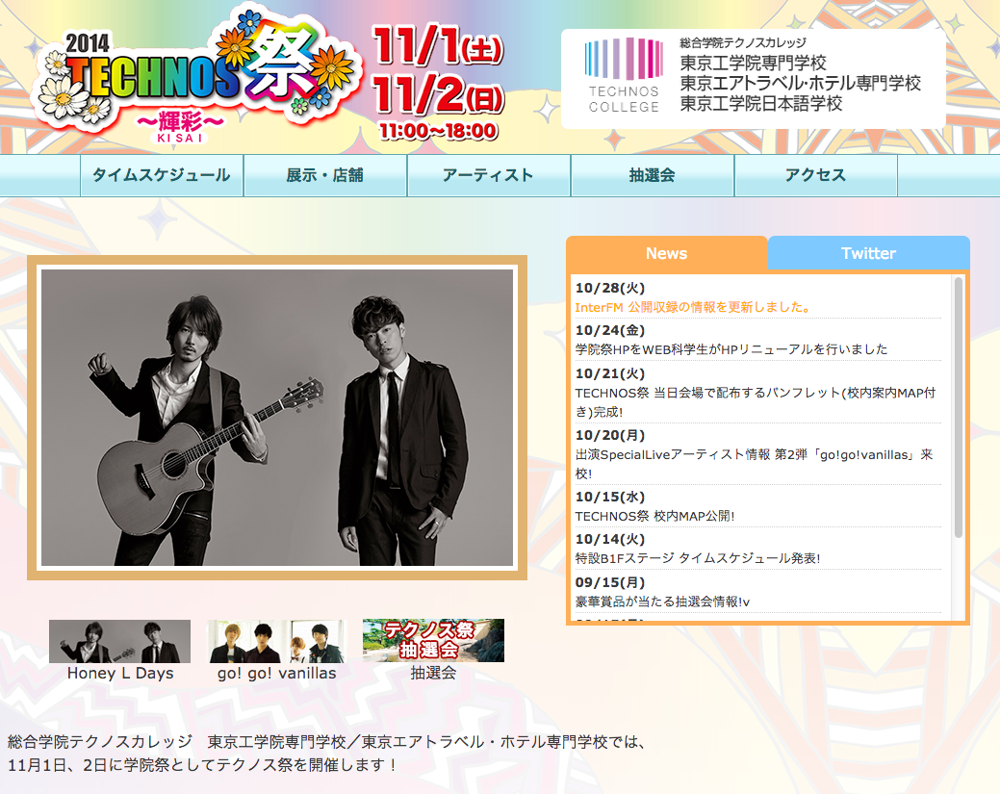2014年テクノス学院祭にて、広報サイトのデザインとコーディングをさせていただきました。
- 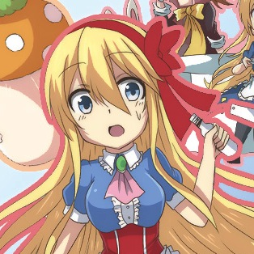アリスの世界を再現した双六です。双六の形は飛び出す絵本のになっています。
- 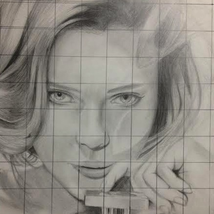雑誌のモデルの写真を元に、グリットデッサンしました。
- 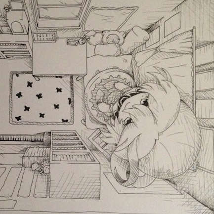自分の部屋を上から見た時にどう見えるかを描きました。そしてその部屋にでかくしたフィギュアをおいてみました。
- 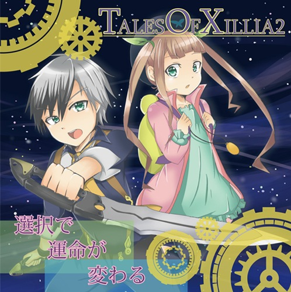ナムコさんのテイルズシリーズのキャラを描いてジャケットのデザインを作りました。時計が重要な作品なので歯車を配置して雰囲気をだしました。
- 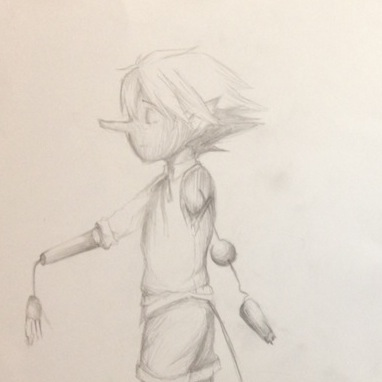テーマはピノキオです。青色の紙を使う事で、ピノキオのロバになったときの悲しみを表現できたかと思います。
- 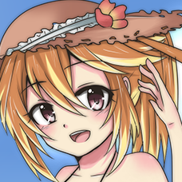カレンダーでゲームのキャラを自分で描いて作りました。画像が変わるごとに服が季節にあわせて変わっていきます。
- 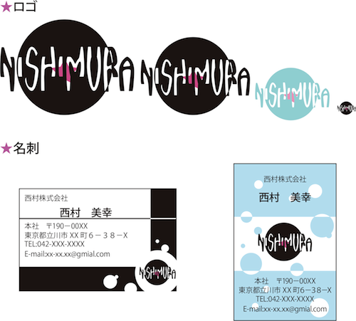自分のロゴデザインを考えました。
- 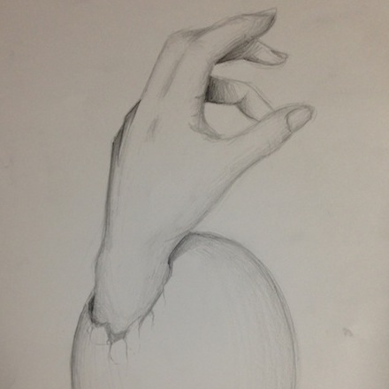手と卵がテーマでデッサンで描きました。卵から手が生まれてきているイメージで描きました。